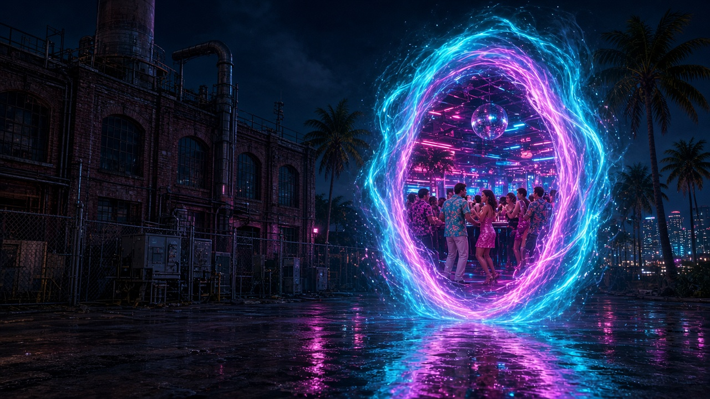

Nightlife secrets
How Do You Open the Vice City Portal in GTA 6? | Peekhole

Short answer: Start at the Badger radio tower in Key Lento, flip 12 power substations in the right order without fast traveling, then go to the T.H. Power Station east of Hamlet between 7 p.m. and 6 a.m. and pull the lever by the portal. It drops you into a retro, PS2-style Malibu Club.
Step by step
- Radio tower: Climb the Badger tower in Key Lento. Pull the lever by the door, then press the button by the old TV. Polygon says the screen should show "Malibu."
- 12 substations: Visit the LPL substations in order. Each has a letter or two on the wall and a button or lever marked with pink or purple tape. Together the letters spell LIFEISPASSINGMEBY, the old GTA: Vice City cheat that sped up the clock.
- No shortcuts: Don't fast travel, swap characters, die or get busted. Guides say any of those resets the chain, and so does a wrong input.
- The text: After the 12th switch, an unknown number texts you the final spot.
- The portal: Go to the T.H. Power Station at night. The portal is on the north side. Guards will shoot, so a helicopter or a quiet swim helps. Pull the lever left of the gate.
The full substation order, with maps, is in the Polygon and Game8 guides below. We're not going to retype 12 lever directions and risk getting one wrong.
What do you get?
Per Polygon: a Tommy Vercetti-style Hawaiian shirt, the American Glory motorcycle (register it), and a new livery at Vice Vinyl. To leave the old club, head to the room behind the bar.
It's the coolest club in town, and you need a power grid and a midnight curfew just to get in.
Sources
- Polygon: Vice City portal Easter egg location in GTA 6
- Game8: Tommy Vercetti Easter Egg walkthrough and rewards
- VICE: How to unlock Tommy Vercetti's shirt in GTA 6
Peekhole take: Twenty-four years later, the Malibu still has the best door policy in Vice City.